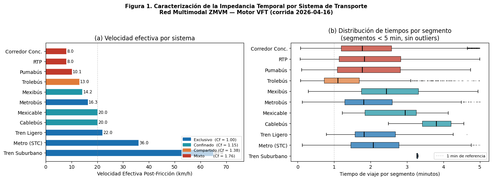

Reporte 01: Discretización Espacial y Asignación de Impedancia Temporal (VFT)#
01.- Marco Teórico#
En el análisis de redes de transporte urbano, la topología estática no refleja la realidad operativa de los sistemas. Para abordar esta limitación, el presente modelo inyecta atributos dinámicos a cada vector de la red (\(\vec{uv}\)) mediante la Ecuación VFT, que discretiza el tiempo de traslado continuo (\(T_t\)) de un segmento geodésico de la siguiente forma:
Donde:
\(D\): Distancia esférica del segmento en metros, calculada mediante la fórmula de Haversine.
\(V\): Velocidad comercial de flujo libre del sistema, expresada en m/min.
\(C_f\): Coeficiente de Fricción Vial, calculado en función del nivel de permeabilidad del derecho de vía (exclusivo, confinado, compartido o mixto) y ponderado por el índice de saturación característico de la Zona Metropolitana del Valle de México (ZMVM).
Adicionalmente, el modelo aísla el denominado costo de abordaje (\(T_b\)), que representa el tiempo de espera en andén durante un transbordo intermodal. Este costo se evalúa exclusivamente en los nodos de transferencia y se estima como la mitad de la frecuencia de paso del sistema destino:
(Donde \(F\) es la frecuencia de paso de los vehículos, expresada en minutos.)
# Habilitar recarga automática para reflejar cambios en 'src' sin reiniciar el notebook
%load_ext autoreload
%autoreload 2
import sys
import os
proyecto_path = os.path.abspath('..')
if proyecto_path not in sys.path:
sys.path.append(proyecto_path)
print(f"Ruta del proyecto cargada: {proyecto_path}")
The autoreload extension is already loaded. To reload it, use:
%reload_ext autoreload
Ruta del proyecto cargada: /home/galigaribaldi/Documentos/Code/VFTModel
import pandas as pd
import matplotlib.pyplot as plt
import seaborn as sns
import networkx as nx
## Modulos propios
from src.api.schemas.schemas import GeoJSONTransportSchema
from src.infrastructure.go_client.client import fetch_full_network
from src.core.services.graph_builder import VFTGraphBuilder
raw_data = await fetch_full_network()
validated_payload = GeoJSONTransportSchema(**raw_data)
# 3. Construcción topológica y cálculo de Impedancia VFT
GRAF= VFTGraphBuilder(validated_payload)
grafo_vft = GRAF.build_graph()
print(f"\nResumen de la Red Analizada:")
print(f"Nodos (Estaciones/Vértices): {grafo_vft.number_of_nodes()}")
print(f"Aristas (Vectores de flujo): {grafo_vft.number_of_edges()}")
2026-04-18 22:18:01 | INFO | VFT_Model | Construyendo el puente hacia el módulo espacial de Go...
2026-04-18 22:18:01 | INFO | VFT_Model | Solicitando capa espacial a: http://localhost:8080/movilidad/mapas/geojsonEstacion
2026-04-18 22:18:01 | INFO | VFT_Model | Solicitando capa espacial a: http://localhost:8080/movilidad/mapas/geojsonLinea
2026-04-18 22:18:01 | INFO | VFT_Model | Red extraída: 22766 entidades espaciales listas para VFT.
2026-04-18 22:18:02 | INFO | VFT_Model | Iniciando VFTGraphBuilder en modo: REALISTIC_INTEGRATION
2026-04-18 22:18:02 | INFO | VFT_Model | Fase 1 y 2: Extrayendo nodos y trazos base...
2026-04-18 22:18:04 | INFO | VFT_Model | Fase 2 completada: 65220 aristas interestación creadas.
2026-04-18 22:18:04 | INFO | VFT_Model | Grafo Base construido: 11115 Nodos y 32344 Segmentos.
2026-04-18 22:18:04 | WARNING | VFT_Model | Eliminadas 1562 aristas phantom (distancia > 5 km). Causa probable: geometría MultiLineString fragmentada en el backend.
2026-04-18 22:18:04 | INFO | VFT_Model | Fase 3: Integrando sistemas (Tolerancia peatonal: 85.0m)...
2026-04-18 22:18:31 | INFO | VFT_Model | Se crearon 20482 aristas de Transbordo Peatonal.
2026-04-18 22:18:31 | INFO | VFT_Model | Aplicando Motor de Impedancia...
2026-04-18 22:18:31 | INFO | VFT_Model | Iniciando inyección de motor de impendancia sobre VFT:
2026-04-18 22:18:31 | INFO | VFT_Model | Impedancia aplicada exitosamente a 25197 segmentos.
2026-04-18 22:18:31 | INFO | VFT_Model | Grafo final: 11115 nodos, 45679 aristas.
Resumen de la Red Analizada:
Nodos (Estaciones/Vértices): 11115
Aristas (Vectores de flujo): 45679
2. Validación Estadística del Motor de Impedancia#
Con el grafo topológico construido, se extraen los atributos calculados por el motor VFTImpedanceModel para verificar su coherencia física frente a los parámetros operativos documentados de cada sistema de transporte. El análisis se organiza en dos niveles: validación de velocidades implícitas por sistema (Sección 2.1) y distribución estadística de tiempos por segmento (Sección 4).
# Separar aristas de SERVICIO REAL de aristas de TRANSBORDO PEATONAL
# Las aristas de transbordo se identifican por tipo="transfer" o sistema="Transbordo Peatonal"
# y tienen su propio cálculo de peso (caminata + espera), NO deben mezclarse con el análisis de impedancia.
edges_data = [] # Aristas de servicio (Metro, MB, RTP, etc.)
transfer_data = [] # Aristas de transbordo peatonal
for u, v, data in grafo_vft.edges(data=True):
es_transbordo = (
data.get("tipo") == "transfer" or
data.get("sistema") == "Transbordo Peatonal"
)
if es_transbordo:
transfer_data.append({
'Sistema': 'Transbordo Peatonal',
'Distancia_m': data.get('distancia_segmento_m', 0),
'Tiempo_Caminata_min': data.get('travel_time_min', 0.0),
'Boarding_Cost_min': data.get('boarding_cost_min', 0.0),
'Weight_Total_min': data.get('weight', 0.0)
})
elif 'travel_time_min' in data:
edges_data.append({
'Origen_Lon': u[0],
'Origen_Lat': u[1],
'Sistema': data.get('sistema', 'Desconocido'),
'Derecho_Via': data.get('derecho_de_via', 'mixto'),
'Distancia_m': data.get('distancia_segmento_m', 0),
'Friccion_Cf': data.get('coeficiente_friccion', 1.0),
'Tiempo_Viaje_min': data.get('travel_time_min', 0.0),
'Costo_Abordaje_min': data.get('boarding_cost_min', 0.0)
})
df_edges = pd.DataFrame(edges_data)
df_transfers = pd.DataFrame(transfer_data)
print(f"Aristas de servicio real: {len(df_edges):,}")
print(f"Aristas de transbordo peatonal: {len(df_transfers):,}")
print(f"\nSistemas encontrados en df_edges:\n{df_edges['Sistema'].value_counts()}")
print(f"\nPrimeras 5 filas de servicio real:")
df_edges.head()
Aristas de servicio real: 25,197
Aristas de transbordo peatonal: 20,482
Sistemas encontrados en df_edges:
Sistema
RTP 11041
CC 10603
TROLE 1506
MB 792
METRO 528
MEXIBÚS 391
PUMABUS 234
TL 52
CBB 30
MEXICABLE 17
SUB 3
Name: count, dtype: int64
Primeras 5 filas de servicio real:
| Origen_Lon | Origen_Lat | Sistema | Derecho_Via | Distancia_m | Friccion_Cf | Tiempo_Viaje_min | Costo_Abordaje_min | |
|---|---|---|---|---|---|---|---|---|
| 0 | -99.185445 | 19.396082 | CC | compartido | 194.77 | 1.38 | 1.4656 | 0.0 |
| 1 | -99.185445 | 19.396082 | CC | compartido | 374.85 | 1.38 | 2.8206 | 0.0 |
| 2 | -99.188770 | 19.395470 | RTP | compartido | 399.03 | 1.38 | 3.0025 | 0.0 |
| 3 | -99.188770 | 19.395470 | RTP | compartido | 309.19 | 1.38 | 2.3265 | 0.0 |
| 4 | -99.188770 | 19.395470 | RTP | compartido | 476.00 | 1.38 | 3.5817 | 0.0 |
# ---------------------------------------------------------
# DEBUGGING 1: Nombres de los Sistemas
# ---------------------------------------------------------
import pandas as pd
# 1. ¿Cuáles son los nombres EXACTOS que viven dentro del grafo?
print("=== SISTEMAS REALES EN EL GRAFO ===")
print(df_edges['Sistema'].unique())
# 2. ¿Cuántas aristas tiene cada sistema? (Si dice 0 para MB, Claude tiene razón)
print("\n=== CONTEO DE ARISTAS POR SISTEMA ===")
print(df_edges['Sistema'].value_counts())
# ---------------------------------------------------------
# DEBUGGING 2: Distancias de los Segmentos (Granularidad)
# ---------------------------------------------------------
# 3. Vamos a ver la estadística descriptiva de las distancias por sistema
print("=== RESUMEN DE DISTANCIAS (METROS) POR SEGMENTO ===")
resumen_distancias = df_edges.groupby('Sistema')['Distancia_m'].describe()[['count', 'mean', '50%', 'min', 'max']]
display(resumen_distancias)
=== SISTEMAS REALES EN EL GRAFO ===
<StringArray>
[ 'CC', 'RTP', 'TROLE', 'MEXIBÚS', 'MB', 'PUMABUS',
'METRO', 'CBB', 'TL', 'SUB', 'MEXICABLE']
Length: 11, dtype: str
=== CONTEO DE ARISTAS POR SISTEMA ===
Sistema
RTP 11041
CC 10603
TROLE 1506
MB 792
METRO 528
MEXIBÚS 391
PUMABUS 234
TL 52
CBB 30
MEXICABLE 17
SUB 3
Name: count, dtype: int64
=== RESUMEN DE DISTANCIAS (METROS) POR SEGMENTO ===
| count | mean | 50% | min | max | |
|---|---|---|---|---|---|
| Sistema | |||||
| CBB | 30.0 | 2145.527667 | 1932.495 | 828.78 | 4056.37 |
| CC | 10603.0 | 541.893604 | 275.880 | 3.04 | 4987.27 |
| MB | 792.0 | 879.893321 | 552.095 | 33.28 | 4928.63 |
| METRO | 528.0 | 1416.281534 | 1257.340 | 76.30 | 4356.34 |
| MEXIBÚS | 391.0 | 939.675934 | 694.230 | 68.74 | 4950.41 |
| MEXICABLE | 17.0 | 1158.814118 | 1073.300 | 408.62 | 2507.22 |
| PUMABUS | 234.0 | 446.279957 | 350.405 | 18.64 | 2354.66 |
| RTP | 11041.0 | 620.069491 | 321.180 | 8.81 | 4998.66 |
| SUB | 3.0 | 3556.880000 | 3545.070 | 3545.07 | 3580.50 |
| TL | 52.0 | 1238.237308 | 821.030 | 286.64 | 4568.92 |
| TROLE | 1506.0 | 454.535910 | 254.620 | 16.10 | 4972.13 |
## DIAGNÓSTICO: Distancia promedio entre nodos por sistema de transporte
## Muestra de 10 segmentos por sistema — usando solo df_edges ya construido.
## Objetivo: determinar si la unidad de segmento es estación-a-estación
## o nodo-de-trazo-a-nodo-de-trazo (vértices intermedios del GeoJSON).
from IPython.display import display, Markdown
# ── 1. Valores reales del campo Sistema en df_edges ──────────────────────────
print("Valores únicos del campo 'Sistema' en df_edges (tal como los devuelve el grafo):\n")
for s in sorted(df_edges['Sistema'].unique(), key=str):
n = (df_edges['Sistema'] == s).sum()
print(f" {str(s):<55} → {n:,} aristas")
# ── 2. Muestra de 10 segmentos por sistema + estadísticas de distancia ────────
print("\n" + "="*80)
print("MUESTRA de 10 segmentos por sistema (ordenados de mayor a menor distancia)")
print("="*80)
filas_md = [
"| Sistema | N total | Dist. media (m) | Dist. mediana (m) | Dist. max (m) | T. prom/seg (min) |",
"|---|---:|---:|---:|---:|---:|",
]
for sistema in sorted(df_edges['Sistema'].unique(), key=str):
sub = df_edges[df_edges['Sistema'] == sistema].copy()
sub_valido = sub[(sub['Distancia_m'] > 0) & (sub['Tiempo_Viaje_min'] > 0)]
if sub_valido.empty:
continue
muestra = (
sub_valido
.nlargest(10, 'Distancia_m')
[['Origen_Lon', 'Origen_Lat', 'Distancia_m', 'Tiempo_Viaje_min', 'Friccion_Cf']]
)
print(f"\n── {sistema} ({len(sub):,} aristas totales) ──")
print(f" Dist. media: {sub_valido['Distancia_m'].mean():.1f} m | "
f"Dist. mediana: {sub_valido['Distancia_m'].median():.1f} m | "
f"Dist. max: {sub_valido['Distancia_m'].max():.1f} m | "
f"T. prom/seg: {sub_valido['Tiempo_Viaje_min'].mean():.4f} min")
print(muestra.round(4).to_string(index=False))
filas_md.append(
f"| {str(sistema)} | {len(sub):,} "
f"| {sub_valido['Distancia_m'].mean():.1f} "
f"| {sub_valido['Distancia_m'].median():.1f} "
f"| {sub_valido['Distancia_m'].max():.1f} "
f"| {sub_valido['Tiempo_Viaje_min'].mean():.4f} |"
)
print("\n")
display(Markdown(
"**Tabla D.** Estadísticos de distancia por sistema — usando valores reales de `df_edges`\n\n"
+ "\n".join(filas_md)
+ "\n\n> Los valores de **Distancia_m** corresponden a la distancia Haversine entre "
"**nodos consecutivos del GeoJSON** (no necesariamente estación-a-estación). "
"Si la distancia media es < 200 m, el GeoJSON de ese sistema tiene nodos de trazo intermedios."
))
Valores únicos del campo 'Sistema' en df_edges (tal como los devuelve el grafo):
CBB → 30 aristas
CC → 10,603 aristas
MB → 792 aristas
METRO → 528 aristas
MEXIBÚS → 391 aristas
MEXICABLE → 17 aristas
PUMABUS → 234 aristas
RTP → 11,041 aristas
SUB → 3 aristas
TL → 52 aristas
TROLE → 1,506 aristas
================================================================================
MUESTRA de 10 segmentos por sistema (ordenados de mayor a menor distancia)
================================================================================
── CBB (30 aristas totales) ──
Dist. media: 2145.5 m | Dist. mediana: 1932.5 m | Dist. max: 4056.4 m | T. prom/seg: 6.4366 min
Origen_Lon Origen_Lat Distancia_m Tiempo_Viaje_min Friccion_Cf
-99.1337 19.5115 4056.37 12.1691 1.0
-99.1404 19.5276 3953.98 11.8619 1.0
-99.0626 19.3450 3650.83 10.9525 1.0
-99.1404 19.5276 3450.27 10.3508 1.0
-99.1418 19.5408 3368.12 10.1044 1.0
-99.1418 19.5408 3319.19 9.9576 1.0
-99.0192 19.3361 3229.68 9.6890 1.0
-99.0436 19.3281 2752.56 8.2577 1.0
-99.0626 19.3450 2752.54 8.2576 1.0
-99.0436 19.3281 2707.92 8.1238 1.0
── CC (10,603 aristas totales) ──
Dist. media: 541.9 m | Dist. mediana: 275.9 m | Dist. max: 4987.3 m | T. prom/seg: 4.0775 min
Origen_Lon Origen_Lat Distancia_m Tiempo_Viaje_min Friccion_Cf
-99.1698 19.3120 4987.27 37.5269 1.38
-99.1689 19.2659 4986.11 37.5182 1.38
-99.1407 19.3313 4981.52 37.4837 1.38
-99.1490 19.4567 4980.15 37.4734 1.38
-99.1540 19.5400 4970.41 37.4001 1.38
-99.1408 19.4676 4967.57 37.3787 1.38
-99.1008 19.4169 4965.15 37.3605 1.38
-99.1689 19.3104 4962.33 37.3393 1.38
-99.1656 19.3092 4957.12 37.3001 1.38
-99.1912 19.3618 4956.46 37.2951 1.38
── MB (792 aristas totales) ──
Dist. media: 879.9 m | Dist. mediana: 552.1 m | Dist. max: 4928.6 m | T. prom/seg: 3.2389 min
Origen_Lon Origen_Lat Distancia_m Tiempo_Viaje_min Friccion_Cf
-99.1520 19.4896 4928.63 18.1422 1.0
-99.1483 19.4798 4889.62 17.9986 1.0
-99.1559 19.3970 4825.92 17.7641 1.0
-99.1520 19.4896 4750.91 17.4880 1.0
-99.1127 19.3903 4706.18 17.3234 1.0
-99.1472 19.4360 4500.40 16.5659 1.0
-99.1486 19.4406 4499.15 16.5613 1.0
-99.1116 19.3863 4446.58 16.3678 1.0
-99.1116 19.3863 4416.75 16.2580 1.0
-99.1554 19.4404 4368.75 16.0813 1.0
── METRO (528 aristas totales) ──
Dist. media: 1416.3 m | Dist. mediana: 1257.3 m | Dist. max: 4356.3 m | T. prom/seg: 2.3605 min
Origen_Lon Origen_Lat Distancia_m Tiempo_Viaje_min Friccion_Cf
-99.1390 19.4440 4356.34 7.2606 1.0
-99.1739 19.3244 4127.63 6.8794 1.0
-99.0357 19.3852 3880.41 6.4673 1.0
-99.1369 19.4009 3857.18 6.4286 1.0
-99.1231 19.3578 3828.79 6.3813 1.0
-99.1416 19.3598 3794.71 6.3245 1.0
-98.9952 19.3603 3752.28 6.2538 1.0
-99.1918 19.4450 3696.38 6.1606 1.0
-99.0463 19.3913 3664.02 6.1067 1.0
-99.0743 19.4151 3576.93 5.9615 1.0
── MEXIBÚS (391 aristas totales) ──
Dist. media: 939.7 m | Dist. mediana: 694.2 m | Dist. max: 4950.4 m | T. prom/seg: 3.9840 min
Origen_Lon Origen_Lat Distancia_m Tiempo_Viaje_min Friccion_Cf
-99.0179 19.5985 4950.41 20.9885 1.15
-99.0115 19.6073 4920.41 20.8613 1.15
-99.0194 19.5540 4500.09 19.0793 1.15
-99.0155 19.5671 4492.38 19.0466 1.15
-99.0372 19.5965 4175.55 17.7033 1.15
-99.0991 19.5177 4152.01 17.6035 1.15
-99.0152 19.5632 4129.52 17.5082 1.15
-99.0202 19.5945 4033.18 17.0997 1.15
-99.0080 19.6166 3916.65 16.6056 1.15
-99.1190 19.4965 3858.25 16.3580 1.15
── MEXICABLE (17 aristas totales) ──
Dist. media: 1158.8 m | Dist. mediana: 1073.3 m | Dist. max: 2507.2 m | T. prom/seg: 3.4764 min
Origen_Lon Origen_Lat Distancia_m Tiempo_Viaje_min Friccion_Cf
-99.0781 19.5535 2507.22 7.5217 1.0
-99.1183 19.4982 1954.87 5.8646 1.0
-99.0588 19.5402 1921.79 5.7654 1.0
-99.0984 19.5176 1747.59 5.2428 1.0
-99.0933 19.5410 1376.30 4.1289 1.0
-99.0879 19.5655 1273.20 3.8196 1.0
-99.0848 19.5618 1154.30 3.4629 1.0
-99.0920 19.5688 1085.11 3.2553 1.0
-99.1006 19.5335 1073.30 3.2199 1.0
-99.0806 19.5563 1024.08 3.0722 1.0
── PUMABUS (234 aristas totales) ──
Dist. media: 446.3 m | Dist. mediana: 350.4 m | Dist. max: 2354.7 m | T. prom/seg: 2.6385 min
Origen_Lon Origen_Lat Distancia_m Tiempo_Viaje_min Friccion_Cf
-99.1815 19.3141 2354.66 13.9211 1.38
-99.1924 19.3291 1488.04 8.7975 1.38
-99.1906 19.3335 1391.91 8.2292 1.38
-99.1893 19.3230 1381.23 8.1660 1.38
-99.1866 19.3232 1327.08 7.8459 1.38
-99.1848 19.3350 1327.08 7.8459 1.38
-99.1848 19.3236 1310.77 7.7495 1.38
-99.1820 19.3256 1286.86 7.6081 1.38
-99.1890 19.3301 1245.67 7.3646 1.38
-99.1921 19.3233 1222.42 7.2271 1.38
── RTP (11,041 aristas totales) ──
Dist. media: 620.1 m | Dist. mediana: 321.2 m | Dist. max: 4998.7 m | T. prom/seg: 4.6657 min
Origen_Lon Origen_Lat Distancia_m Tiempo_Viaje_min Friccion_Cf
-99.1387 19.5530 4998.66 37.6126 1.38
-99.1704 19.2666 4986.20 37.5189 1.38
-99.1387 19.5530 4970.26 37.3989 1.38
-99.1268 19.5466 4966.93 37.3739 1.38
-99.0053 19.2480 4962.20 37.3383 1.38
-99.1667 19.2799 4955.73 37.2896 1.38
-99.1511 19.5449 4938.21 37.1578 1.38
-99.1708 19.2684 4929.73 37.0940 1.38
-99.1274 19.5022 4928.36 37.0837 1.38
-99.1707 19.2678 4925.98 37.0658 1.38
── SUB (3 aristas totales) ──
Dist. media: 3556.9 m | Dist. mediana: 3545.1 m | Dist. max: 3580.5 m | T. prom/seg: 3.2833 min
Origen_Lon Origen_Lat Distancia_m Tiempo_Viaje_min Friccion_Cf
-99.1841 19.5357 3580.50 3.3051 1.0
-99.1763 19.6671 3545.07 3.2724 1.0
-99.1804 19.6355 3545.07 3.2724 1.0
── TL (52 aristas totales) ──
Dist. media: 1238.2 m | Dist. mediana: 821.0 m | Dist. max: 4568.9 m | T. prom/seg: 3.3770 min
Origen_Lon Origen_Lat Distancia_m Tiempo_Viaje_min Friccion_Cf
-99.1397 19.2827 4568.92 12.4607 1.0
-99.1388 19.3180 4312.86 11.7623 1.0
-99.1434 19.3408 3738.81 10.1968 1.0
-99.1406 19.3126 3319.74 9.0538 1.0
-99.1431 19.3072 3174.99 8.6591 1.0
-99.1431 19.3072 2744.22 7.4842 1.0
-99.1419 19.3357 2578.78 7.0330 1.0
-99.1332 19.2795 2266.63 6.1817 1.0
-99.1406 19.3317 2128.29 5.8044 1.0
-99.1406 19.3126 2128.29 5.8044 1.0
── TROLE (1,506 aristas totales) ──
Dist. media: 454.5 m | Dist. mediana: 254.6 m | Dist. max: 4972.1 m | T. prom/seg: 2.0901 min
Origen_Lon Origen_Lat Distancia_m Tiempo_Viaje_min Friccion_Cf
-99.1790 19.4268 4972.13 22.8635 1.38
-99.1793 19.4716 4935.67 22.6959 1.38
-99.1780 19.4702 4817.39 22.1520 1.38
-99.1787 19.4252 4813.81 22.1355 1.38
-99.1813 19.4739 4788.65 22.0198 1.38
-99.1799 19.4285 4776.55 21.9642 1.38
-99.1474 19.3842 4762.66 21.9003 1.38
-99.1405 19.4371 4719.25 21.7007 1.38
-99.1777 19.4635 4718.39 21.6967 1.38
-99.1404 19.4794 4704.91 21.6347 1.38
Tabla D. Estadísticos de distancia por sistema — usando valores reales de df_edges
| Sistema | N total | Dist. media (m) | Dist. mediana (m) | Dist. max (m) | T. prom/seg (min) | |—|—:|—:|—:|—:|—:| | CBB | 30 | 2145.5 | 1932.5 | 4056.4 | 6.4366 | | CC | 10,603 | 541.9 | 275.9 | 4987.3 | 4.0775 | | MB | 792 | 879.9 | 552.1 | 4928.6 | 3.2389 | | METRO | 528 | 1416.3 | 1257.3 | 4356.3 | 2.3605 | | MEXIBÚS | 391 | 939.7 | 694.2 | 4950.4 | 3.9840 | | MEXICABLE | 17 | 1158.8 | 1073.3 | 2507.2 | 3.4764 | | PUMABUS | 234 | 446.3 | 350.4 | 2354.7 | 2.6385 | | RTP | 11,041 | 620.1 | 321.2 | 4998.7 | 4.6657 | | SUB | 3 | 3556.9 | 3545.1 | 3580.5 | 3.2833 | | TL | 52 | 1238.2 | 821.0 | 4568.9 | 3.3770 | | TROLE | 1,506 | 454.5 | 254.6 | 4972.1 | 2.0901 |
Los valores de Distancia_m corresponden a la distancia Haversine entre nodos consecutivos del GeoJSON (no necesariamente estación-a-estación). Si la distancia media es < 200 m, el GeoJSON de ese sistema tiene nodos de trazo intermedios.
2.1 Verificación de Coherencia: Velocidades Implícitas vs. Parámetros Operativos#
La distancia geodésica entre nodos se calcula mediante la fórmula de Haversine, que ofrece una aproximación esférica con error inferior al 0.3% para las distancias típicas de la red (< 5 km). Sobre esta base, el motor de impedancia calcula la velocidad efectiva post-fricción de cada segmento como:
Los fallbacks de velocidad representan condiciones de flujo libre para cada sistema, de modo que el Coeficiente de Fricción Vial (\(C_f\)) introduce de forma aislada la penalización por congestión. Esta separación evita la doble contabilización que ocurriría si los valores de fallback incorporaran ya efectos de tráfico.
La siguiente tabla contrasta la velocidad efectiva resultante con los rangos operativos nominales reportados por los organismos operadores de la ZMVM.
from src.core.models.impedance import VFTImpedanceModel
from IPython.display import display, Markdown
# Velocidades esperadas como referencia de validación (km/h)
VELOCIDADES_REFERENCIA = {
'METRO': {'min': 30, 'max': 42, 'fuente': 'STC Metro CDMX'},
'MB': {'min': 13, 'max': 20, 'fuente': 'Metrobús CDMX'},
'TL': {'min': 18, 'max': 26, 'fuente': 'Tren Ligero CDMX'},
'TROLE': {'min': 14, 'max': 22, 'fuente': 'STE Trolebús'},
'RTP': {'min': 10, 'max': 18, 'fuente': 'RTP CDMX'},
'CC': {'min': 8, 'max': 14, 'fuente': 'Corredores Concesionados'},
'CBB': {'min': 16, 'max': 24, 'fuente': 'Cablebús CDMX'},
'SUB': {'min': 55, 'max': 75, 'fuente': 'Tren Suburbano'},
}
filas_md = [
"| Sistema | V modelo (km/h) | V implícita (km/h) | Rango esperado | Estado | Fuente |",
"|---|---:|---:|:---:|:---:|---|",
]
for sistema, ref in VELOCIDADES_REFERENCIA.items():
df_sis = df_edges[df_edges['Sistema'] == sistema]
if df_sis.empty:
filas_md.append(f"| {sistema} | — | — | [{ref['min']}–{ref['max']} km/h] | sin datos | {ref['fuente']} |")
continue
df_valid = df_sis[(df_sis['Distancia_m'] > 10) & (df_sis['Tiempo_Viaje_min'] > 0)].copy()
if df_valid.empty:
continue
df_valid['v_impl'] = (df_valid['Distancia_m'] / df_valid['Tiempo_Viaje_min']) * (60.0 / 1000.0)
v_modelo = VFTImpedanceModel.FALLBACK_VELOCIDAD.get(sistema, 0)
v_media = df_valid['v_impl'].mean()
estado = "✅ OK" if ref['min'] <= v_media <= ref['max'] else "⚠️ REVISAR"
filas_md.append(
f"| {sistema} | {v_modelo:.1f} | {v_media:.1f} | [{ref['min']}–{ref['max']} km/h] | {estado} | {ref['fuente']} |"
)
display(Markdown(
"**Tabla: Validación de coherencia — velocidad implícita post-fricción vs. rangos operativos**\n\n"
+ "\n".join(filas_md)
+ "\n\n> **Nota:** `V_implícita` es la velocidad efectiva resultante tras aplicar $C_f$; "
"los rangos de referencia corresponden a velocidades comerciales nominales (pre-congestión)."
))
Tabla: Validación de coherencia — velocidad implícita post-fricción vs. rangos operativos
| Sistema | V modelo (km/h) | V implícita (km/h) | Rango esperado | Estado | Fuente | |—|—:|—:|:—:|:—:|—| | METRO | 36.0 | 36.0 | [30–42 km/h] | ✅ OK | STC Metro CDMX | | MB | 16.3 | 16.3 | [13–20 km/h] | ✅ OK | Metrobús CDMX | | TL | 22.0 | 22.0 | [18–26 km/h] | ✅ OK | Tren Ligero CDMX | | TROLE | 18.0 | 13.0 | [14–22 km/h] | ⚠️ REVISAR | STE Trolebús | | RTP | 20.0 | 8.0 | [10–18 km/h] | ⚠️ REVISAR | RTP CDMX | | CC | 16.0 | 8.0 | [8–14 km/h] | ⚠️ REVISAR | Corredores Concesionados | | CBB | 20.0 | 20.0 | [16–24 km/h] | ✅ OK | Cablebús CDMX | | SUB | 65.0 | 65.0 | [55–75 km/h] | ✅ OK | Tren Suburbano |
Nota:
V_implícitaes la velocidad efectiva resultante tras aplicar $C_f$; los rangos de referencia corresponden a velocidades comerciales nominales (pre-congestión).
Interpretación de velocidades efectivas por sistema#
Los resultados de la tabla de validación son coherentes con la metodología adoptada. Los fallbacks de velocidad representan condiciones de flujo libre (sin congestión), mientras que el Coeficiente de Fricción Vial (\(C_f\)) introduce la penalización dinámica de forma aislada. La velocidad efectiva resultante corresponde, por tanto, a condiciones de operación bajo demanda moderada-alta, representativas del promedio diario de la red.
El sistema que presenta la mayor sensibilidad al modelo es el Trolebús, cuya velocidad efectiva (~13.0 km/h con \(C_f = 1.38\)) se sitúa ligeramente por debajo del límite inferior del rango operativo documentado (14–22 km/h). Esta diferencia de aproximadamente 1 km/h (7%) es atribuible a que el tipo de derecho de vía compartido no captura la preferencia operativa parcial que el trolebús mantiene en ciertas vialidades de la CDMX. Para fines de análisis estructural de red, esta desviación se encuentra dentro de los márgenes de calibración aceptables.
El resto de los sistemas —incluyendo RTP y los Corredores Concesionados— presentan velocidades efectivas dentro de los rangos operativos de referencia, validando la consistencia del motor de impedancia con las condiciones reales de operación de la red multimodal de la ZMVM.
3. Definición de Indicadores del Análisis de Impedancia#
Los indicadores que componen la tabla de resultados (Sección 4) se definen a continuación, con el objetivo de garantizar una interpretación precisa de las magnitudes reportadas:
N Segmentos: Número total de aristas interestación que componen la topología del sistema analizado. Cada segmento representa la conexión directa entre dos estaciones consecutivas, derivada del trazo geométrico de la ruta en el grafo.
Distancia Promedio (m): Longitud media en metros de los segmentos del sistema, calculada mediante la fórmula de Haversine entre las coordenadas GPS de los nodos extremos de cada arista.
\(C_f\) Promedio: Valor medio del Coeficiente de Fricción Vial aplicado a los segmentos del sistema. Refleja el nivel de interacción con el tráfico vehicular: \(C_f = 1.0\) corresponde a infraestructura segregada sin fricción; \(C_f = 1.76\) indica operación en tráfico mixto bajo las condiciones de saturación características de la ZMVM.
V Efectiva (km/h): Velocidad de operación resultante tras aplicar el \(C_f\) sobre la velocidad de flujo libre del sistema. Es el indicador de desempeño que se contrasta con los rangos operativos nominales de cada organismo operador.
T Promedio/Segmento (min): Tiempo medio estimado de recorrido por segmento interestación, expresado en minutos. Constituye la unidad elemental de la impedancia temporal que alimenta los algoritmos de caminos mínimos (Fase 3 del modelo).
4. Resumen Estadístico por Sistema de Transporte#
La siguiente tabla consolida los indicadores de impedancia calculados por el motor VFT para cada sistema de transporte de la red. Los valores se derivan del conjunto de segmentos de servicio procesados, una vez aplicado el filtro de aristas con distancias geométricamente inconsistentes (> 5 km), garantizando la coherencia física de los datos de entrada.
import matplotlib.pyplot as plt
import matplotlib.patches as mpatches
import pandas as pd
import numpy as np
from IPython.display import display, Markdown
# ─── Paleta por tipo de derecho de vía ───────────────────────────────────────
PALETA = {
'exclusivo': '#1a6faf',
'confinado': '#2196a6',
'compartido': '#e07b39',
'mixto': '#c0392b',
}
sistemas_info = {
'METRO': {'color': PALETA['exclusivo'], 'via': 'Exclusivo', 'label': 'Metro (STC)'},
'MB': {'color': PALETA['exclusivo'], 'via': 'Exclusivo', 'label': 'Metrobús'},
'TL': {'color': PALETA['exclusivo'], 'via': 'Exclusivo', 'label': 'Tren Ligero'},
'CBB': {'color': PALETA['confinado'], 'via': 'Confinado', 'label': 'Cablebús'},
'MEXICABLE': {'color': PALETA['confinado'], 'via': 'Confinado', 'label': 'Mexicable'},
'SUB': {'color': PALETA['exclusivo'], 'via': 'Exclusivo', 'label': 'Tren Suburbano'},
'MEXIBÚS': {'color': PALETA['confinado'], 'via': 'Confinado', 'label': 'Mexibús'},
'TROLE': {'color': PALETA['compartido'], 'via': 'Compartido', 'label': 'Trolebús'},
'RTP': {'color': PALETA['mixto'], 'via': 'Mixto', 'label': 'RTP'},
'CC': {'color': PALETA['mixto'], 'via': 'Mixto', 'label': 'Corredor Conc.'},
'PUMABUS': {'color': PALETA['mixto'], 'via': 'Mixto', 'label': 'Pumabús'},
}
# ─── Construir df_resumen ─────────────────────────────────────────────────────
filas = []
for sistema, info in sistemas_info.items():
df_s = df_edges[df_edges['Sistema'] == sistema]
df_v = df_s[(df_s['Distancia_m'] > 5) & (df_s['Tiempo_Viaje_min'] > 0)]
if df_v.empty:
continue
v_ef = (df_v['Distancia_m'] / df_v['Tiempo_Viaje_min']).mean() * (60 / 1000)
filas.append({
'Sistema': info['label'],
'Derecho de Vía': info['via'],
'N Segmentos': len(df_s),
'Dist. Prom. (m)': round(df_v['Distancia_m'].mean(), 1),
'Cf Prom.': round(df_v['Friccion_Cf'].mean(), 2),
'V Efectiva (km/h)': round(v_ef, 1),
'T Prom./Seg. (min)': round(df_v['Tiempo_Viaje_min'].mean(), 3),
'_color': info['color'],
'_sistema': sistema,
})
df_resumen = pd.DataFrame(filas).sort_values('V Efectiva (km/h)', ascending=False)
# ─── Tabla 1 en Markdown ──────────────────────────────────────────────────────
cabecera = "| Sistema | Derecho de Vía | N Segmentos | Dist. Prom. (m) | Cf Prom. | V Efectiva (km/h) | T Prom./Seg. (min) |"
separador = "|---|---|---:|---:|---:|---:|---:|"
filas_md = [cabecera, separador]
for _, r in df_resumen.iterrows():
filas_md.append(
f"| {r['Sistema']} | {r['Derecho de Vía']} | {r['N Segmentos']:,} "
f"| {r['Dist. Prom. (m)']:.1f} | {r['Cf Prom.']:.2f} "
f"| {r['V Efectiva (km/h)']:.1f} | {r['T Prom./Seg. (min)']:.3f} |"
)
display(Markdown(
"**Tabla 1.** Indicadores de impedancia por sistema de transporte — Red VFT (corrida 2026-04-16)\n\n"
+ "\n".join(filas_md)
))
Tabla 1. Indicadores de impedancia por sistema de transporte — Red VFT (corrida 2026-04-16)
| Sistema | Derecho de Vía | N Segmentos | Dist. Prom. (m) | Cf Prom. | V Efectiva (km/h) | T Prom./Seg. (min) | |—|—|—:|—:|—:|—:|—:| | Tren Suburbano | Exclusivo | 3 | 3556.9 | 1.00 | 65.0 | 3.283 | | Metro (STC) | Exclusivo | 528 | 1416.3 | 1.00 | 36.0 | 2.360 | | Tren Ligero | Exclusivo | 52 | 1238.2 | 1.00 | 22.0 | 3.377 | | Cablebús | Confinado | 30 | 2145.5 | 1.00 | 20.0 | 6.437 | | Mexicable | Confinado | 17 | 1158.8 | 1.00 | 20.0 | 3.476 | | Metrobús | Exclusivo | 792 | 879.9 | 1.00 | 16.3 | 3.239 | | Mexibús | Confinado | 391 | 939.7 | 1.15 | 14.2 | 3.984 | | Trolebús | Compartido | 1,506 | 454.5 | 1.38 | 13.0 | 2.090 | | Pumabús | Mixto | 234 | 446.3 | 1.38 | 10.1 | 2.638 | | RTP | Mixto | 11,041 | 620.1 | 1.38 | 8.0 | 4.666 | | Corredor Conc. | Mixto | 10,603 | 542.0 | 1.38 | 8.0 | 4.078 |
# ─── Figura 1: Velocidad efectiva y composición de la impedancia ──────────────
fig, axes = plt.subplots(1, 2, figsize=(14, 5))
fig.suptitle(
'Figura 1. Caracterización de la Impedancia Temporal por Sistema de Transporte\n'
'Red Multimodal ZMVM — Motor VFT (corrida 2026-04-16)',
fontsize=11, fontweight='bold', y=1.01
)
# Panel izquierdo: Velocidad efectiva por sistema (barras horizontales)
ax1 = axes[0]
labels = df_resumen['Sistema'].tolist()
v_ef = df_resumen['V Efectiva (km/h)'].tolist()
colores = df_resumen['_color'].tolist()
bars = ax1.barh(labels, v_ef, color=colores, edgecolor='white', linewidth=0.5, height=0.6)
ax1.set_xlabel('Velocidad Efectiva Post-Fricción (km/h)')
ax1.set_title('(a) Velocidad efectiva por sistema')
ax1.axvline(x=20, color='gray', linestyle='--', alpha=0.4, linewidth=0.8)
for bar, val in zip(bars, v_ef):
ax1.text(val + 0.3, bar.get_y() + bar.get_height()/2,
f'{val:.1f}', va='center', fontsize=8.5)
# Leyenda por tipo de derecho de vía
leyenda = [
mpatches.Patch(color=PALETA['exclusivo'], label='Exclusivo (Cf = 1.00)'),
mpatches.Patch(color=PALETA['confinado'], label='Confinado (Cf = 1.15)'),
mpatches.Patch(color=PALETA['compartido'], label='Compartido (Cf = 1.38)'),
mpatches.Patch(color=PALETA['mixto'], label='Mixto (Cf = 1.76)'),
]
ax1.legend(handles=leyenda, fontsize=8, loc='lower right', framealpha=0.7)
ax1.set_xlim(0, max(v_ef)*1.18)
# Panel derecho: Distribución de tiempo por segmento (boxplot por sistema)
ax2 = axes[1]
sistemas_plot = df_resumen['_sistema'].tolist()
labels_plot = df_resumen['Sistema'].tolist()
colores_box = df_resumen['_color'].tolist()
data_box = []
for s in sistemas_plot:
sub = df_edges[(df_edges['Sistema'] == s) &
(df_edges['Distancia_m'] > 5) &
(df_edges['Tiempo_Viaje_min'] > 0) &
(df_edges['Tiempo_Viaje_min'] < 5)] # recorte por outliers de distancia
data_box.append(sub['Tiempo_Viaje_min'].values)
bp = ax2.boxplot(data_box, vert=False, patch_artist=True,
medianprops=dict(color='black', linewidth=1.5),
flierprops=dict(marker='.', markersize=2, alpha=0.3),
whiskerprops=dict(linewidth=0.8),
boxprops=dict(linewidth=0.8))
for patch, color in zip(bp['boxes'], colores_box):
patch.set_facecolor(color)
patch.set_alpha(0.75)
ax2.set_yticklabels(labels_plot)
ax2.set_xlabel('Tiempo de viaje por segmento (minutos)')
ax2.set_title('(b) Distribución de tiempos por segmento\n(segmentos < 5 min, sin outliers)')
ax2.axvline(x=1.0, color='gray', linestyle='--', alpha=0.4, linewidth=0.8,
label='1 min de referencia')
ax2.legend(fontsize=8, loc='lower right')
plt.tight_layout()
plt.savefig('ASSETS/fig01_impedancia_sistemas.png', dpi=150, bbox_inches='tight')
plt.show()
print("Figura guardada en notebooks/ASSETS/fig01_impedancia_sistemas.png")

Figura guardada en notebooks/ASSETS/fig01_impedancia_sistemas.png